ISIOP
AIPlan4EU project
This project is joint work of IVIresearches: * PhD Dejan Mircetic * PhD Slobodan Ilic.
0.1 Data import
0.2 Autoploting
Za izvještaj napravi neki klasifikator na osnovu čega si sortirao podatke kako bi razdvojio serije na kontinualne i isprekidane.
Ubaciti i neku matematicku formulu za izvještaj.
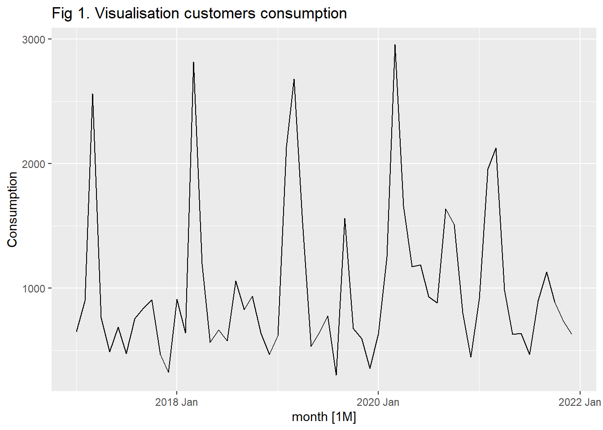
Warning in geom_line(...): Ignoring unknown parameters: `labels`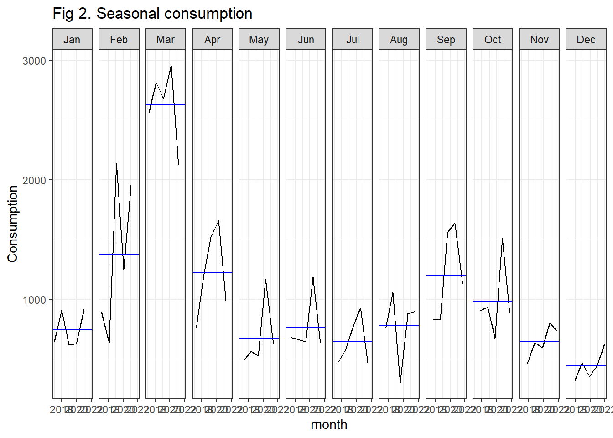
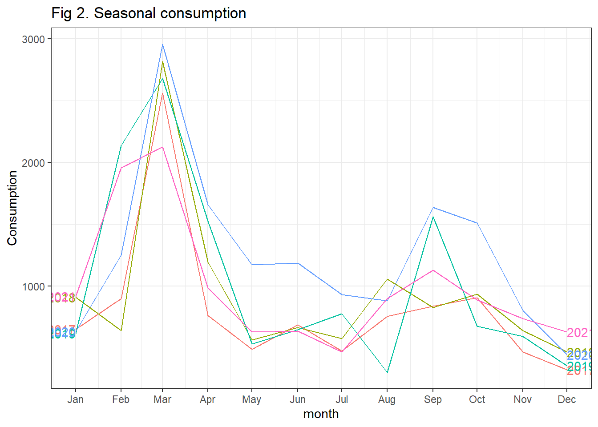
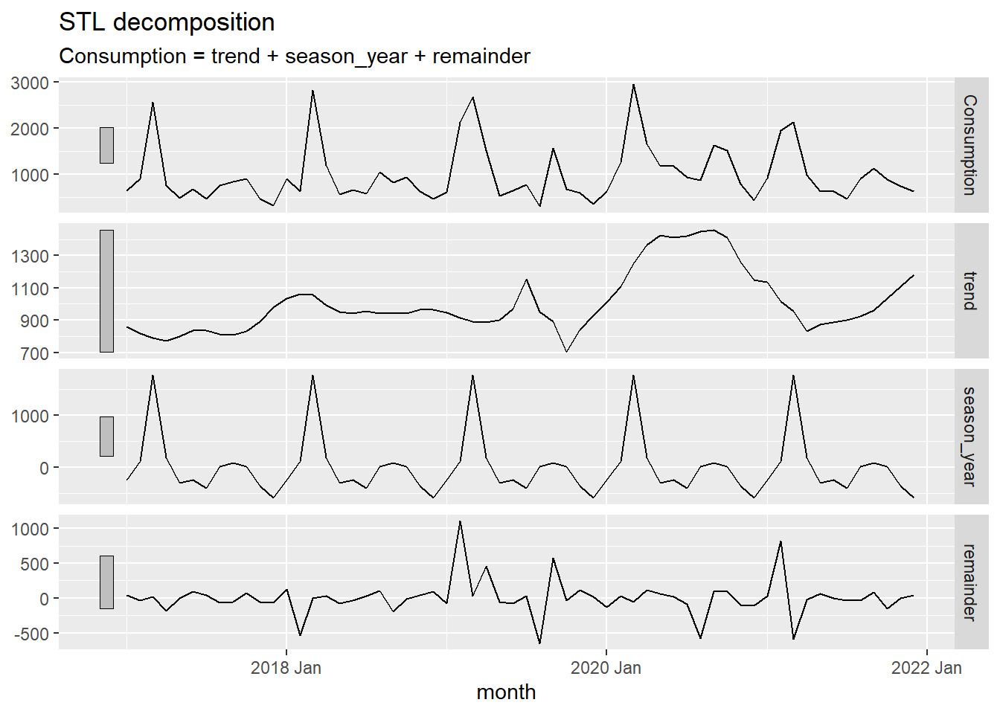
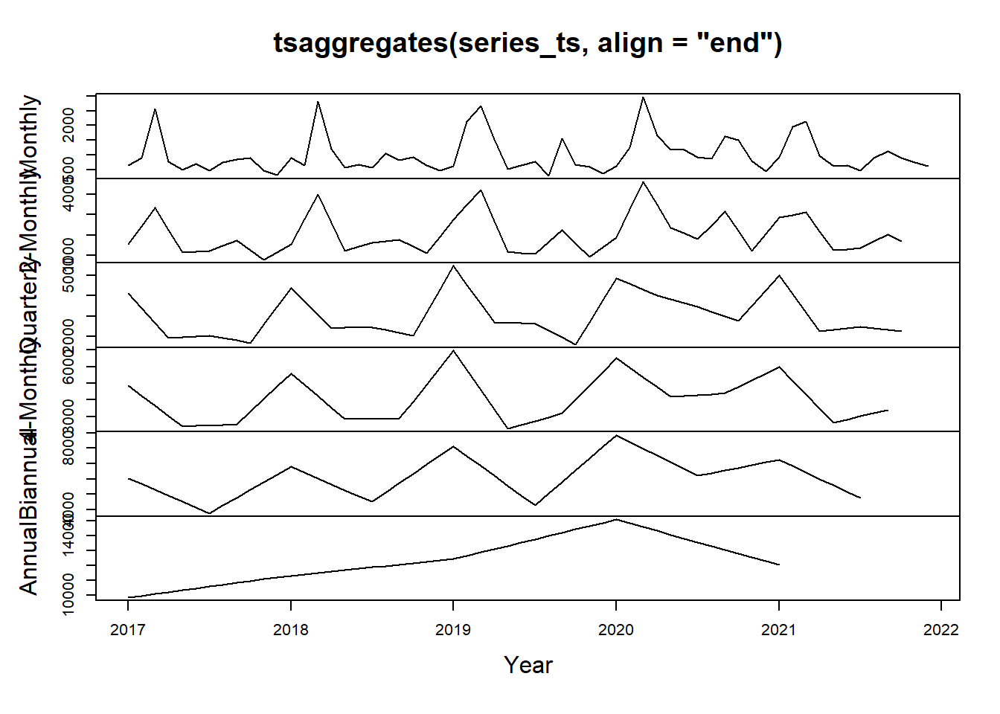
0.3 Kalifikovanje serija
U ovom dijelu je potrebno da smisliš neki klasifikator koji će klasifikovati serije, prema osobinama kako bi ih razdvojio na kontinualne i isprekidane.
Smisli nesto ili pogledaj u knjizi kod Arisa…Kad budes imao vremena definitivno pogledaj kod Arisa, jer možda imaš serije koje imaju nule a mogu da se koriste kontinualni modelni.
#Forcasts of continuous series
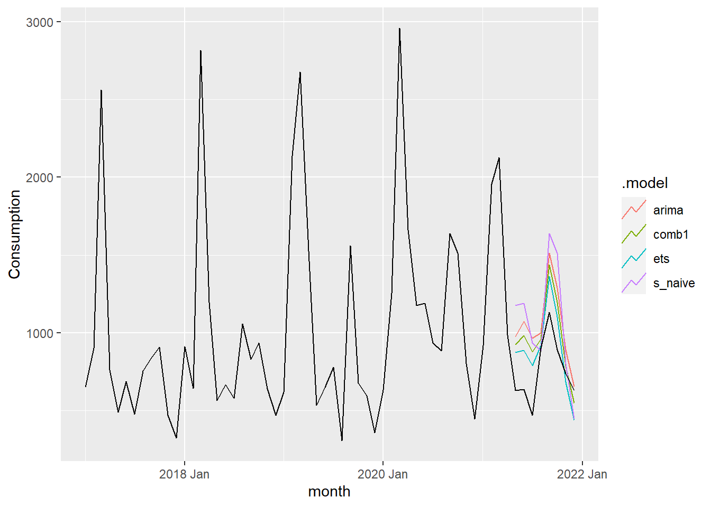
Warning: Outer names are only allowed for unnamed scalar atomic inputs# A tibble: 4 × 5
.model mape rmse rmsse mase
<chr> <dbl> <dbl> <dbl> <dbl>
1 comb1 303. 611. 0.783 0.908
2 arima 326. 633. 0.800 0.933
3 ets 286. 622. 0.831 0.939
4 s_naive 262. 727. 0.943 1.04 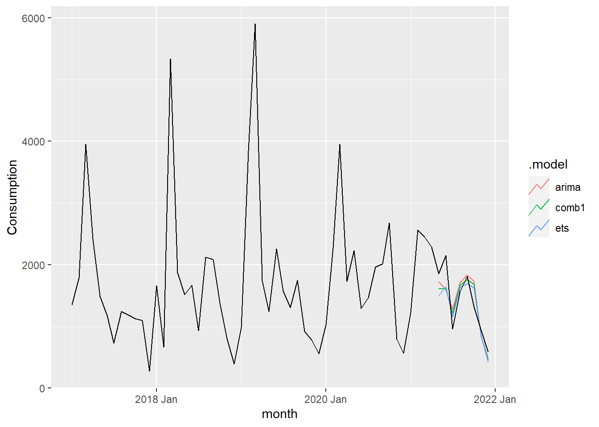
0.4 Sukcesivno treniranje
0.5 Cross Validacija
# A tsibble: 120 x 5 [1M]
# Key: .id, product_ID [4]
product_ID month Consumption label .id
<fct> <mth> <dbl> <chr> <int>
1 7999 2017 Jan 243 continuous 1
2 7999 2017 Feb 243 continuous 1
3 7999 2017 Mar 1710 continuous 1
4 7999 2017 Apr 1110 continuous 1
5 7999 2017 May 329 continuous 1
6 7999 2017 Jun 497 continuous 1
7 7999 2017 Jul 380 continuous 1
8 7999 2017 Aug 499 continuous 1
9 7999 2017 Sep 555 continuous 1
10 7999 2017 Oct 448 continuous 1
# … with 110 more rows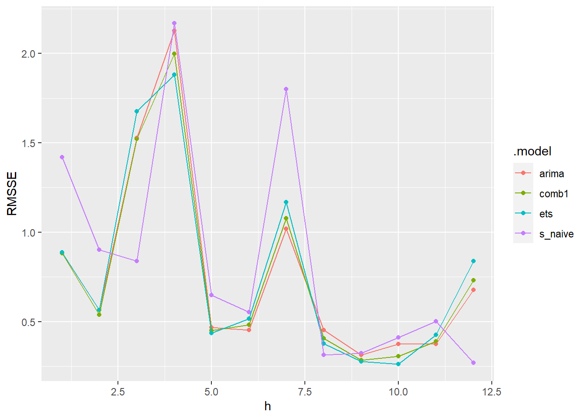
# A tibble: 4 × 11
.model product_ID .type ME RMSE MAE MPE MAPE MASE RMSSE ACF1
<chr> <fct> <chr> <dbl> <dbl> <dbl> <dbl> <dbl> <dbl> <dbl> <dbl>
1 comb1 7999 Test 56.5 400. 277. -312. 343. 0.911 0.974 0.0627
2 arima 7999 Test 61.3 408. 284. -289. 322. 0.934 0.993 0.0894
3 ets 7999 Test 51.7 410. 288. -335. 366. 0.948 0.999 0.0216
4 s_naive 7999 Test 48.6 461. 322. -474. 517. 1.06 1.12 -0.0905# A tibble: 12 × 11
h .model .type ME RMSE MAE MPE MAPE MASE RMSSE ACF1
<int> <chr> <chr> <dbl> <dbl> <dbl> <dbl> <dbl> <dbl> <dbl> <dbl>
1 1 comb1 Test -106. 363. 321. -3425. 3451. 1.06 0.883 -0.693
2 2 comb1 Test 91.2 232. 145. 5.57 16.8 0.453 0.538 -0.479
3 3 comb1 Test 530. 648. 530. 36.8 36.8 1.69 1.52 0.0738
4 4 comb1 Test 285. 842. 538. -18.0 56.9 1.73 2.00 0.0157
5 5 comb1 Test 20.0 223. 219. -8.31 41.4 0.632 0.452 -0.242
6 6 comb1 Test -123. 235. 186. -99.0 111. 0.541 0.482 -0.433
7 7 comb1 Test 312. 525. 455. 8.40 50.7 1.32 1.08 -0.765
8 8 comb1 Test 13.3 198. 196. -9.09 38.1 0.564 0.407 0.291
9 9 comb1 Test -65.8 137. 111. -18.3 25.9 0.326 0.285 -0.475
10 10 comb1 Test 27.2 145. 134. 0.390 21.0 0.397 0.306 0.181
11 11 comb1 Test -70.2 183. 171. -24.3 37.7 0.517 0.389 -0.345
12 12 comb1 Test -236. 340. 315. -197. 225. 0.971 0.731 0.0740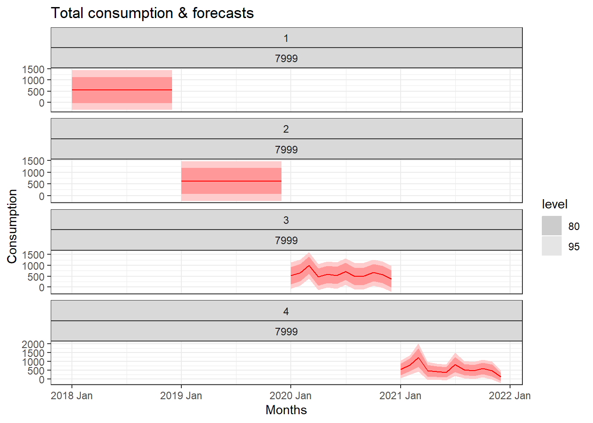
0.6 Plot the best
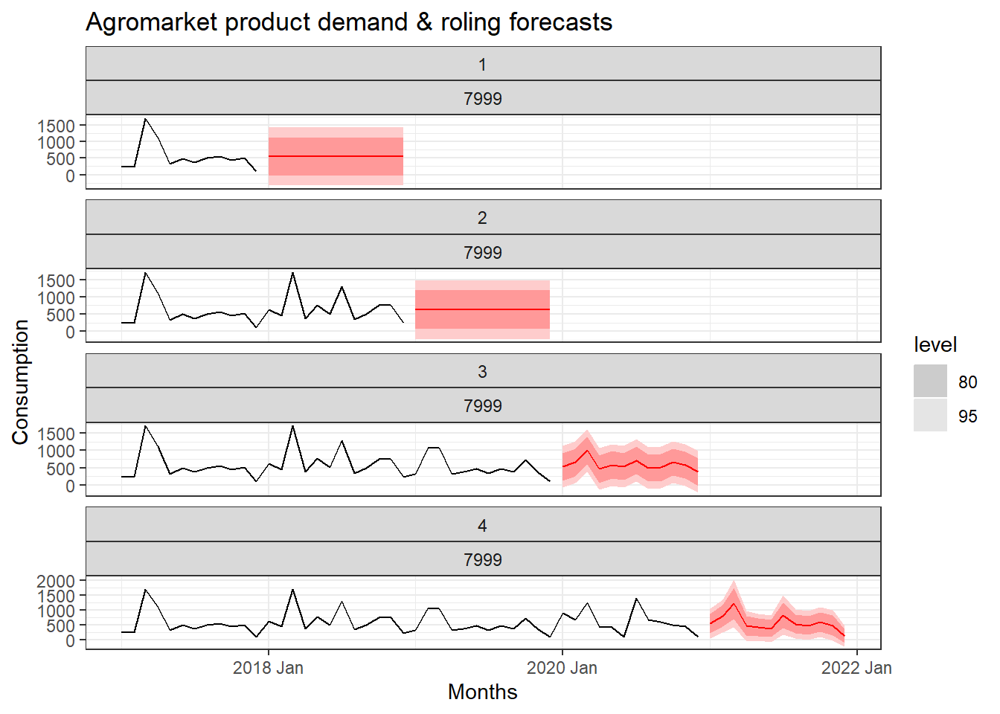
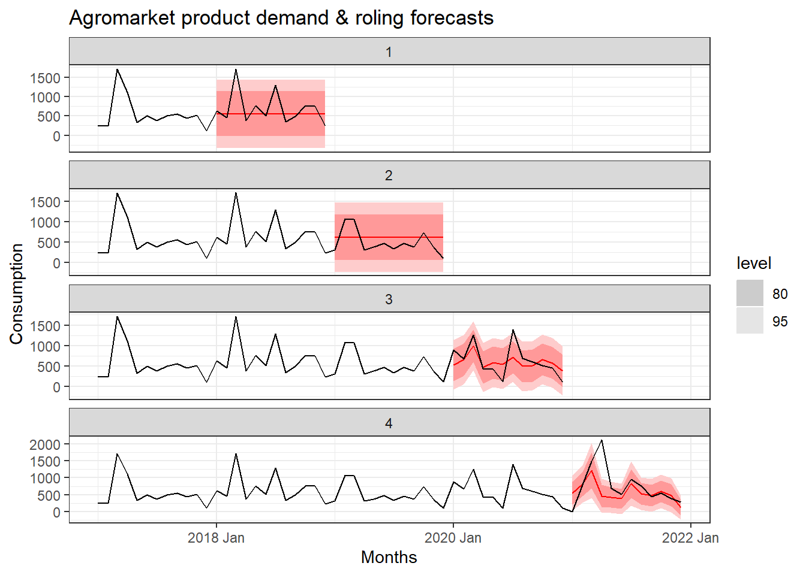
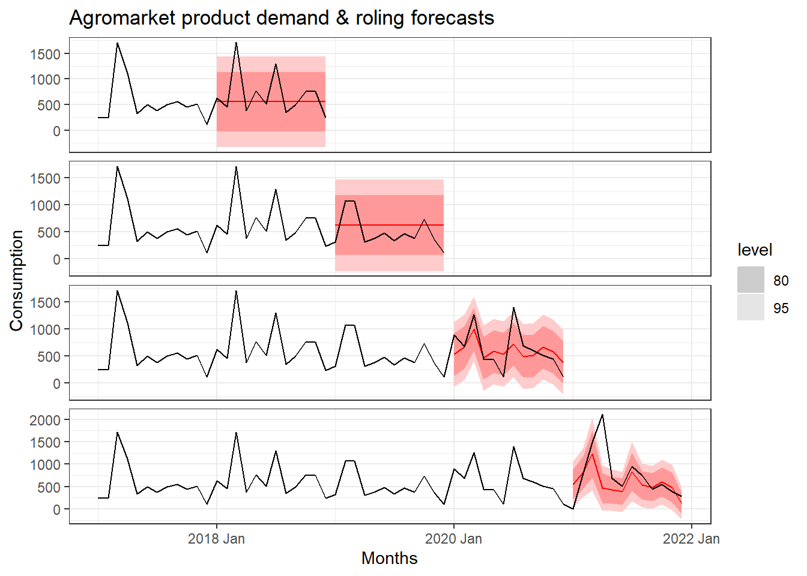
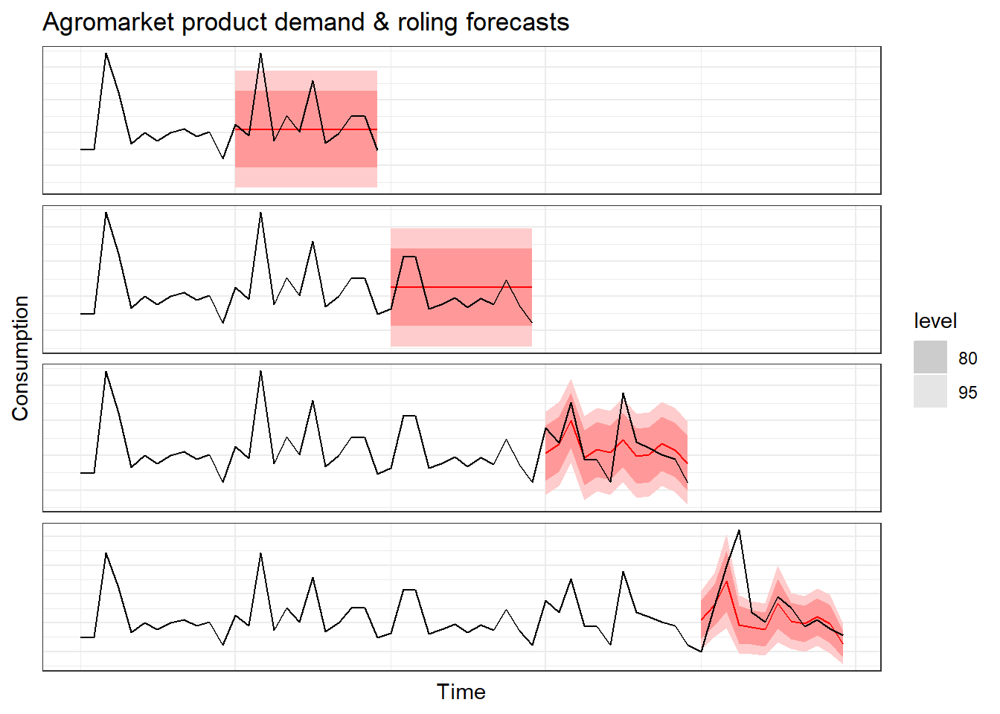
0.7 Intermittent
0.8 Time series features
0.9 Summary statistics
| coeff_of_var | trend_strength | seasonal_strength_year | seasonal_peak_year | seasonal_trough_year | mean | sd | acf1 | |
|---|---|---|---|---|---|---|---|---|
| Min. :0.3235 | Min. :0.0000 | Min. :0.1328 | Min. : 0.00 | Min. : 0.000 | Min. : 0.02 | Min. : 0.129 | Min. :-0.24649 | |
| 1st Qu.:1.7851 | 1st Qu.:0.1176 | 1st Qu.:0.2345 | 1st Qu.: 3.00 | 1st Qu.: 0.000 | 1st Qu.: 0.43 | 1st Qu.: 1.514 | 1st Qu.:-0.01723 | |
| Median :2.7360 | Median :0.1856 | Median :0.3022 | Median : 4.00 | Median : 1.000 | Median : 4.59 | Median : 11.971 | Median : 0.13509 | |
| Mean :3.2845 | Mean :0.2277 | Mean :0.3338 | Mean : 4.89 | Mean : 3.845 | Mean : 85.35 | Mean : 104.720 | Mean : 0.18669 | |
| 3rd Qu.:4.4019 | 3rd Qu.:0.2996 | 3rd Qu.:0.3865 | 3rd Qu.: 7.00 | 3rd Qu.: 8.000 | 3rd Qu.: 24.65 | 3rd Qu.: 53.363 | 3rd Qu.: 0.36087 | |
| Max. :7.7460 | Max. :0.8592 | Max. :0.8963 | Max. :11.00 | Max. :11.000 | Max. :31981.07 | Max. :20535.962 | Max. : 0.83597 |
0.10 Plot the features
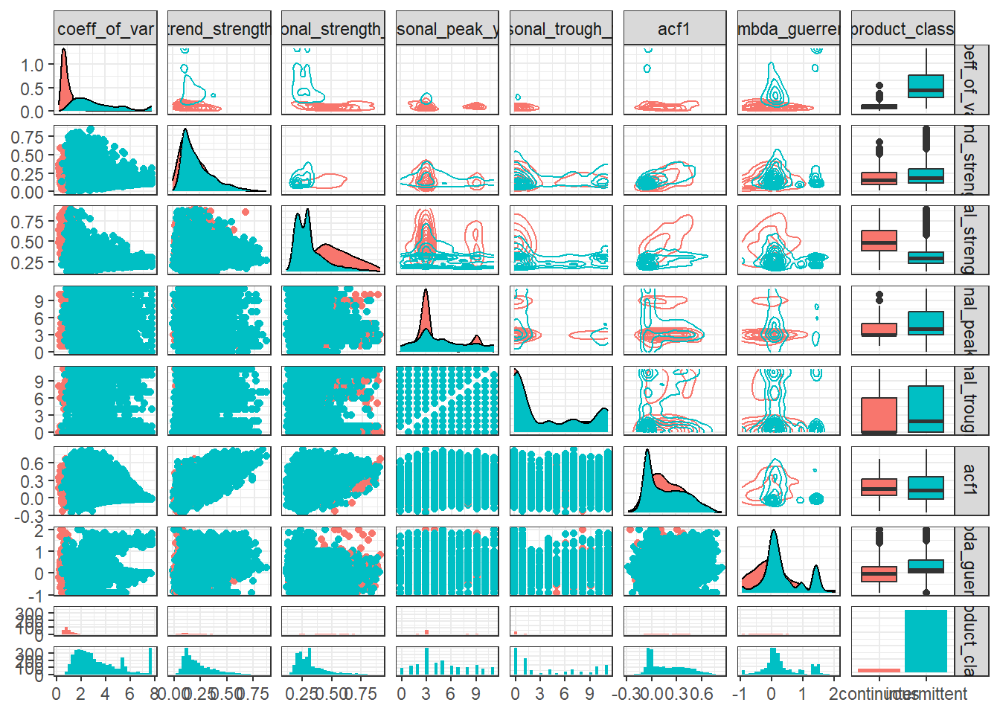
1 Execution time
Time difference of 17.51497 mins